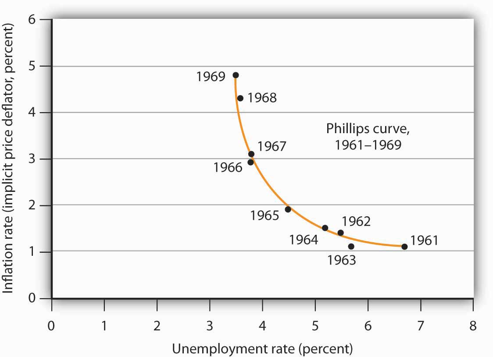
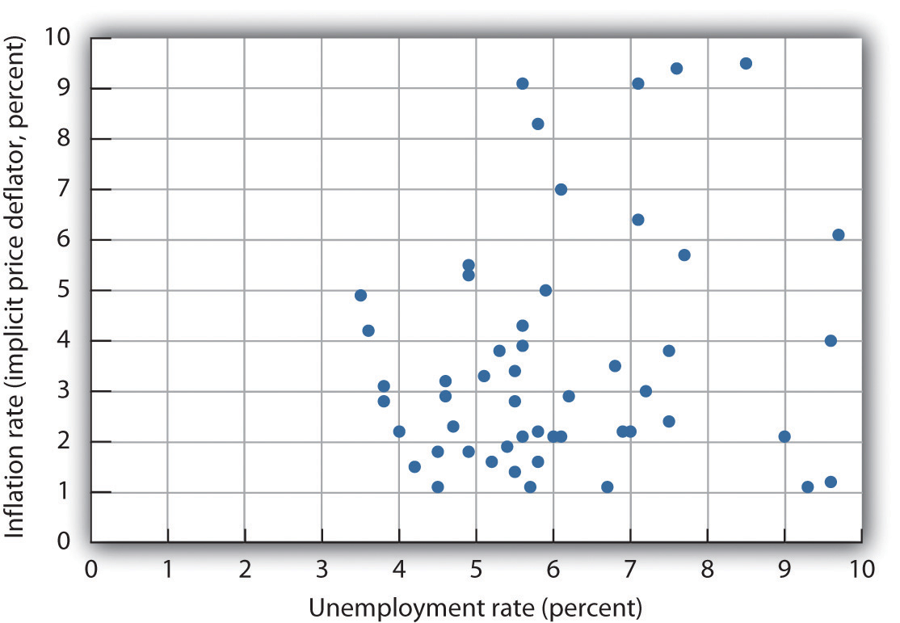
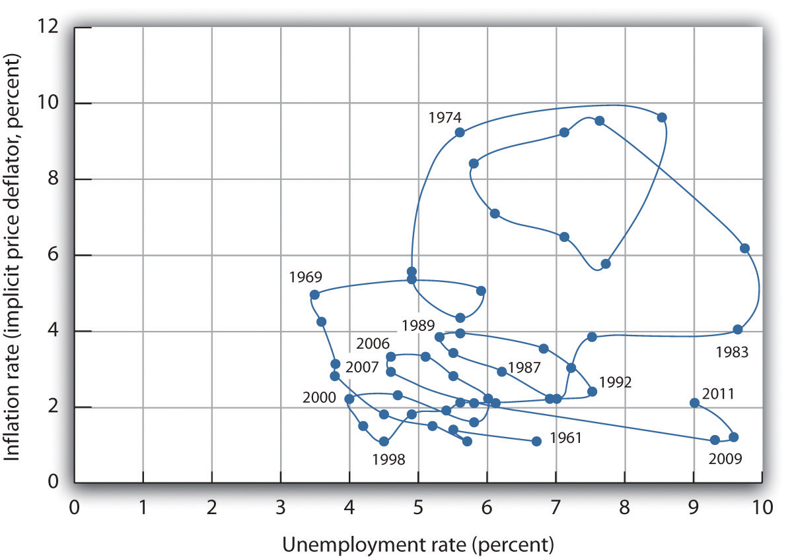
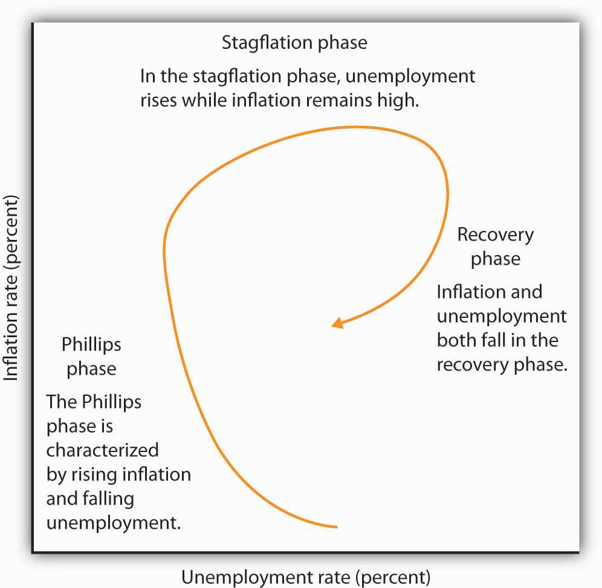
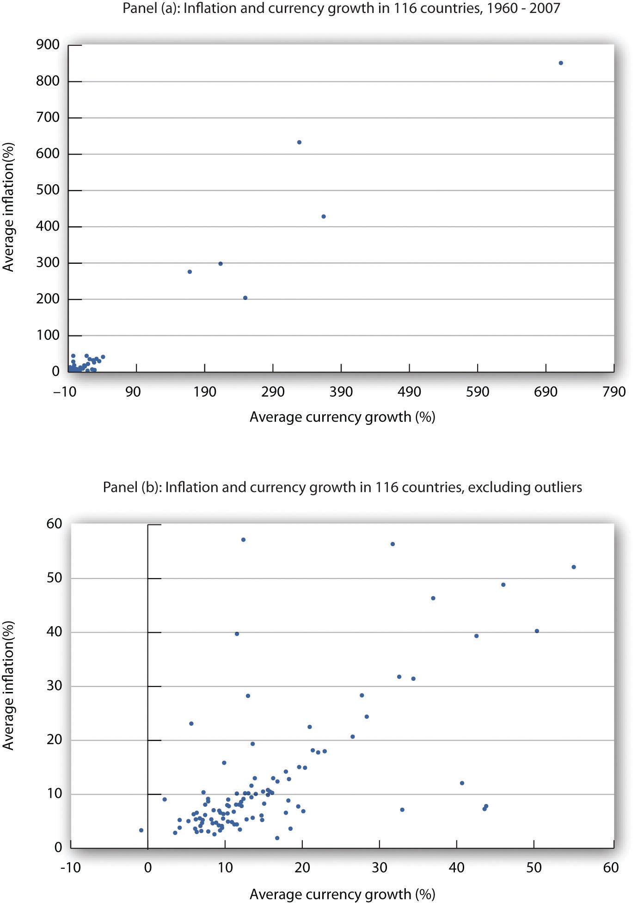
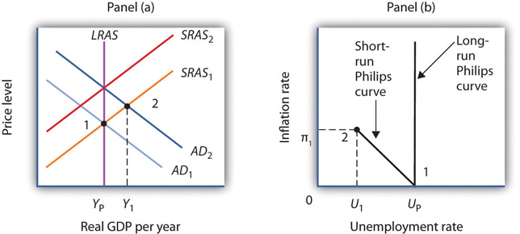
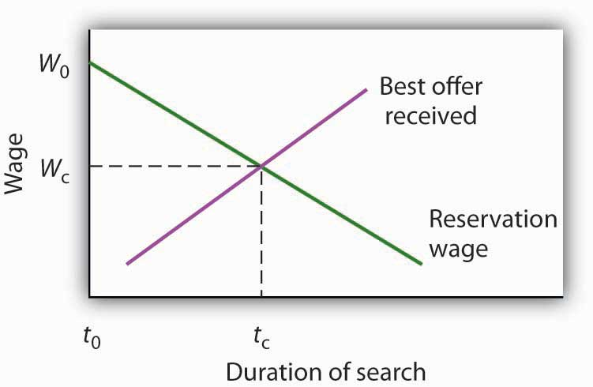
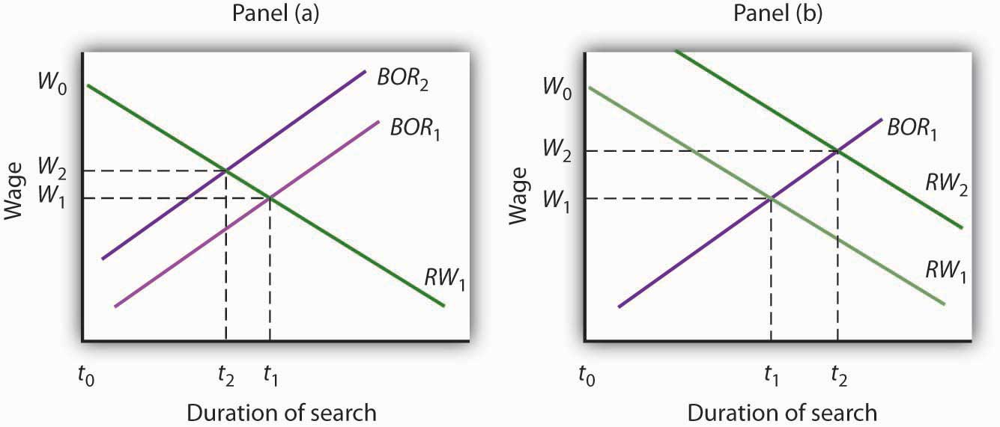

As the twentieth century drew to a close, the people of the United States could look back on a remarkable achievement. From 1992 through 2000, the unemployment rate fell every year. The inflation rate, measured as the annual percentage change in the implicit price deflator, was about 2% or less during this period. The dramatic reduction in the two rates provided welcome relief to a nation that had seen soaring unemployment early in the 1980s, soaring inflation in the late 1970s, and painful increases in both rates early in the 1970s.
Unemployment and inflation rates remained fairly low during the early 2000s. Following a brief recession in 2001, in which unemployment reached nearly 6% (though this actually occurred after the recession officially ended), it fell back to 4.6% in 2006 and 2007. Through 2007, inflation never exceeded 3.3%. With the start of the recession in December 2007, the unemployment rate began to rise. At first, though, it appeared that inflation was becoming a bigger problem, as rising gas and food prices until summer 2008 seemed to be driving up other prices and increasing inflationary expectations. Indeed, through much of 2008, a debate over the appropriate direction of monetary policy occurred over just this issue: should the Fed ease the federal funds rate in an attempt to reduce unemployment or at least to keep it from rising as much as it would otherwise have, or should it stem rising inflation and inflationary expectations by holding the federal funds rate constant or even increasing it? While the Fed voted during most of its 2008 meetings for easing, the year is notable in that there were often dissenters at the Federal Open Market Committee meetings. For example, the minutes of the March 18, 2008, meeting note that two members, Richard W. Fisher of the Dallas Fed and Charles I. Plosser of the Philadelphia Fed voted against the 0.75% point drop approved at that meeting. Their rationale was that the inflation risks were simply too great. The minutes state,
“Incoming data suggested a weaker near-term outlook for economic growth, but the Committee’s earlier policy moves had already reduced the target federal funds rate by 225 basis points to address risks to growth, and the full effect of those rate cuts had yet to be felt. … Both Messrs. Fisher and Plosser were concerned that inflation expectations could potentially become unhinged should the Committee continue to lower the funds rate in the current environment. They pointed to measures of inflation and indicators of inflation expectations that had risen and Mr. Fisher stressed the international influences on U.S. inflation rates. Mr. Plosser noted that the Committee could not afford to wait until there was clear evidence that inflation expectations were no longer anchored, as by then it would be too late to prevent a further increase in inflation pressures.”Minutes of the Federal Open Market Committee March 18, 2008.
But as the depth of the recession increased toward the latter part of 2008, with the unemployment rate reaching 7.2% in December and prices of both oil and other commodities falling back substantially, the inflation threat had dissipated. Unanimity had returned to the FOMC: the Fed should use all of its powers to fight the recession.
This chapter examines the relationship between inflation and unemployment. We will find that there have been periods in which a clear trade-off between inflation and unemployment seemed to exist. During such periods, the economy achieved reductions in unemployment at the expense of increased inflation. But there have also been periods in which inflation and unemployment rose together and periods in which both variables fell together. We will examine some explanations for the sometimes perplexing relationship between the two variables.
We will see that the use of stabilization policy, coupled with the lags for monetary and for fiscal policy, have at times led to a cyclical relationship between inflation and unemployment. The explanation for the fact that Americans enjoyed such a long period of falling inflation and unemployment in the 1990s lies partly in improved policy, policy that takes those lags into account. We will see that a bit of macroeconomic luck in aggregate supply has also played a role.
It has often been the case that progress against inflation comes at the expense of greater unemployment, and that reduced unemployment comes at the expense of greater inflation. This section looks at the record and traces the emergence of the view that a simple trade-off between these macroeconomic “bad guys” exists.
Clearly, it is desirable to reduce unemployment and inflation. Unemployment represents a lost opportunity for workers to engage in productive effort—and to earn income. Inflation erodes the value of money people hold, and more importantly, the threat of inflation adds to uncertainty and makes people less willing to save and firms less willing to invest. If there were a trade-off between the two, we could reduce the rate of inflation or the rate of unemployment, but not both. The fact that the United States did make progress against unemployment and inflation through most of the 1990s and early 2000s represented a macroeconomic triumph, one that appeared impossible just a few years earlier. The next section examines the argument that once dominated macroeconomic thought—that a simple trade-off between inflation and unemployment did, indeed, exist. The argument continues to appear in discussions of macroeconomic policy today; it will be useful to examine it.
In 1958, New Zealand–born economist Almarin Phillips reported that his analysis of a century of British wage and unemployment data suggested that an inverse relationship existed between rates of increase in wages and British unemployment.Almarin W. Phillips, “The Relation between Unemployment and the Rate of Change of Money Wage Rates in the United Kingdom, 1861–1957,” Economica 25 (November 1958): 283–99. Economists were quick to incorporate this idea into their thinking, extending the relationship to the rate of price-level changes—inflation—and unemployment. The notion that there is a trade-off between the two is expressed by a short-run Phillips curveA curve that suggests a negative relationship between inflation and unemployment., a curve that suggests a negative relationship between inflation and unemployment. Figure 31.1 "The Short-Run Phillips Curve" shows a short-run Phillips curve.
Figure 31.1 The Short-Run Phillips Curve

The relationship between inflation and unemployment suggested by the work of Almarin Phillips is shown by a short-run Phillips curve.
The short-run Phillips curve seemed to make good theoretical sense. The dominant school of economic thought in the 1960s suggested that the economy was likely to experience either a recessionary or an inflationary gap. An economy with a recessionary gap would have high unemployment and little or no inflation. An economy with an inflationary gap would have very little unemployment and a higher rate of inflation. The Phillips curve suggested a smooth transition between the two. As expansionary policies were undertaken to move the economy out of a recessionary gap, unemployment would fall and inflation would rise. Policies to correct an inflationary gap would bring down the inflation rate, but at a cost of higher unemployment.
The experience of the 1960s suggested that precisely the kind of trade-off the Phillips curve implied did, in fact, exist in the United States. Figure 31.2 "The Short-Run Phillips Curve in the 1960s" shows annual rates of inflation (computed using the implicit price deflator) plotted against annual rates of unemployment from 1961 to 1969. The points appear to follow a path quite similar to a Phillips curve relationship. The civilian unemployment rate fell from 6.7% in 1961 to 3.5% in 1969. The inflation rate rose from 1.1% in 1961 to 4.8% in 1969. While inflation dipped slightly in 1963, it appeared that, for the decade as a whole, a reduction in unemployment had been “traded” for an increase in inflation.
Figure 31.2 The Short-Run Phillips Curve in the 1960s
Values of U.S. inflation and unemployment rates during the 1960s generally conformed to the trade-off implied by the short-run Phillips curve. The points for each year lie close to a curve with the shape that Phillips’s analysis predicted.
Source: Economic Report of the President, 2011, Tables B-3 and B-42.
In the mid-1960s, the economy moved into an inflationary gap as unemployment fell below its natural level. The economy had already reached its full employment level of output when the 1964 tax cut was passed. The Fed undertook a more expansionary monetary policy at the same time. The combined effect of the two policies increased aggregate demand and pushed the economy beyond full employment and into an inflationary gap. Aggregate demand continued to rise as U.S. spending for the war in Vietnam expanded and as President Lyndon Johnson launched an ambitious program aimed at putting an end to poverty in the United States.
By the end of the decade, unemployment at 3.5% was substantially below its natural level, estimated by the Congressional Budget Office to be 5.6% that year. When Richard Nixon became president in 1969, it was widely believed that, with an economy operating with an inflationary gap, it was time to move back down the Phillips curve, trading a reduction in inflation for an increase in unemployment. President Nixon moved to do precisely that, serving up a contractionary fiscal policy by ordering cuts in federal government purchases. The Fed pursued a contractionary monetary policy aimed at bringing inflation down.
The effort to nudge the economy back down the Phillips curve to an unemployment rate closer to the natural level and a lower rate of inflation met with an unhappy surprise in 1970. Unemployment increased as expected. But inflation rose! The inflation rate rose to 5.3% from its 1969 rate of 4.8%.
The tidy relationship between inflation and unemployment that had been suggested by the experience of the 1960s fell apart in the 1970s. Unemployment rose substantially, but inflation remained the same in 1971. In 1972, both rates fell. The economy seemed to fall back into the pattern described by the Phillips curve in 1973, as inflation rose while unemployment fell. But the next two years saw increases in both rates. The negatively sloped Phillips curve relationship between inflation and unemployment that had seemed to hold true in the 1960s no longer prevailed.
Indeed, a look at annual rates of inflation and unemployment since 1961 suggests that the 1960s were quite atypical. Figure 31.3 "Inflation and Unemployment, 1961–2011" shows the two variables over the period from 1961 through 2011. It is hard to see a negatively sloped Phillips curve lurking within that seemingly random scatter of points.
Figure 31.3 Inflation and Unemployment, 1961–2011
Annual observations of inflation and unemployment in the United States from 1961 to 2011 do not seem consistent with a Phillips curve.
Sources: Economic Report of the President, 2011, Table B-42; Bureau of Economic Analysis, Implicit Price Deflators for Gross Domestic Product, NIPA Table 1.1.9. Unemployment rate for 2011 is annual average from Bureau of Labor Statistics home page.
Although the points plotted in Figure 31.3 "Inflation and Unemployment, 1961–2011" are not consistent with a negatively sloped, stable Phillips curve, connecting the inflation/unemployment points over time allows us to focus on various ways that these two variables may be related.
In Figure 31.4 "Connecting the Points: Inflation and Unemployment" we draw connecting lines through the sequence of observations. By doing so, we see periods in which inflation and unemployment are inversely related (as in the 1960s, late 1970s, late 1980s, the end of the twentieth century, and the first decade of the 2000s). We refer to a period when inflation and unemployment are inversely related as a Phillips phasePeriod in which inflation and unemployment are inversely related..
During other periods, both inflation and unemployment were increasing (as from 1973 to 1975 or 1979 to 1981). A period of rising inflation and unemployment is called a stagflation phasePeriod in which inflation remains high while unemployment increases.. Finally, a recovery phasePeriod in which inflation and unemployment both decline. is a period in which both unemployment and inflation fall (as from 1975 to 1976, 1982 to 1984, and 1992 to 1998). Figure 31.5 "Inflation—Unemployment Phases" presents a stylized version of these three phases.
Figure 31.4 Connecting the Points: Inflation and Unemployment
Connecting observed values for unemployment and inflation sequentially suggests a cyclical pattern of clockwise loops over the 1961–2002 period, after which we see a series of inverse relationships.
Sources: Economic Report of the President, 2011, Tables B-3 and B-42.
Figure 31.5 Inflation—Unemployment Phases
The figure shows the way an economy may move from a Phillips phase to a stagflation phase and then to a recovery phase.
Trace the path of inflation and unemployment as it unfolds in Figure 31.4 "Connecting the Points: Inflation and Unemployment". Starting with the Phillips phase in the 1960s, we see that the economy went through three clockwise loops, representing a stagflation phase, then a recovery phase, a Phillips phase, and so on. Each took the United States to successively higher rates of inflation and unemployment. Following the stagflation of the late 1970s and early 1980s, however, something quite significant happened. The economy suffered a very high rate of unemployment but also achieved very dramatic gains against inflation. The recovery phase of the 1990s was the longest since the U.S. government began tracking inflation and unemployment. Good luck explains some of that: oil prices fell in the late 1990s, shifting the short-run aggregate supply curve to the right. That boosted real GDP and put downward pressure on the price level. But one cause of that improved performance seemed to be the better understanding economists gained from some policy mistakes of the 1970s.
The 2000s look like a series of Phillips phases. The brief recession in 2001 brought higher unemployment and slightly lower inflation. Unemployment fell from 2003 to 2006 but with slightly higher inflation each year. The Great Recession, which began at the end of 2007, was characterized by higher unemployment and lower inflation. The next section will explain these experiences in a stylized way in terms of the aggregate demand and supply model.
Suppose an economy has experienced the rates of inflation and of unemployment shown below. Plot these data graphically in a grid with the inflation rate on the vertical axis and the unemployment rate on the horizontal axis. Identify the periods during which the economy experienced each of the three phases of the inflation-unemployment cycle identified in the text.
| Period | Unemployment Rate (%) | Inflation Rate (%) |
|---|---|---|
| 1 | 2.5 | 6.3 |
| 2 | 2.6 | 5.9 |
| 3 | 2.8 | 4.8 |
| 4 | 4.7 | 4.1 |
| 5 | 4.9 | 5.0 |
| 6 | 5.0 | 6.1 |
| 7 | 4.5 | 5.7 |
| 8 | 4.0 | 5.1 |
Looking back, we may find it difficult to appreciate how stunning the experience of 1970 and 1971 was. But those two years changed the face of macroeconomic thought.
Introductory textbooks of that time contained no mention of aggregate supply. The model of choice was the aggregate expenditures model. Students learned that the economy could be in equilibrium below full employment, in which case unemployment would be the primary macroeconomic problem. Alternatively, equilibrium could occur at an income greater than the full employment level, in which case inflation would be the main culprit to worry about.
These ideas could be summarized using a Phillips curve, a new analytical device. It suggested that economists could lay out for policy makers a menu of possibilities. Policy makers could then choose the mix of inflation and unemployment they were willing to accept. Economists would then show them how to attain that mix with the appropriate fiscal and monetary policies.
Then 1970 and 1971 came crashing in on this well-ordered fantasy. President Richard Nixon had come to office with a pledge to bring down inflation. The consumer price index had risen 4.7% during 1968, the highest rate since 1951. Mr. Nixon cut government purchases in 1969, and the Fed produced a sharp slowing in money growth. The president’s economic advisers predicted at the beginning of 1970 that inflation and unemployment would both fall. Appraising the 1970 debacle early in 1971, the president’s economists said that the experience had not been consistent with what standard models would predict. The economists suggested, however, that this was probably due to a number of transitory factors. Their forecast that inflation and unemployment would improve in 1971 proved wide of the mark—the unemployment rate rose from 4.9% to 5.9% (an increase of 20%), while the rate of inflation measured by the change in the implicit price deflator barely changed from 5.3% to 5.2%.
As we will see, the experience can be readily explained using the model of aggregate demand and aggregate supply. But this tool was not well developed then. The experience of the 1970s forced economists back to their analytical drawing boards and spawned dramatic advances in our understanding of macroeconomic events. We will explore many of those advances in the next chapter.
Source: Economic Report of the President, 1971, pp. 60–84.
We have examined the inflation and unemployment experience in the United States during the past half century. Our task now is to explain it. We will apply the model of aggregate demand and aggregate supply, along with our knowledge of monetary and fiscal policy, to explain just why the economy performed as it did. We will find that the relationship between inflation and unemployment depends crucially on events, macroeconomic policy, and expectations.
The next three sections discuss the pattern that unfolded from the 1970s through the 1990s in which stagflation and then recovery followed Phillips phases. We will also look at the behavior of the economy in the first decade of the 21st century. Each phase results from a specific pattern of shifts in the aggregate demand and short-run aggregate supply curves.
It is important to be careful in thinking about the meaning of changes in inflation as we examine the cycle of inflation and unemployment. The rise in inflation during a Phillips phase does not simply mean that the price level rises. It means that the price level rises by larger and larger percentages. Rising inflation means that the price level is rising at an increasing rate. In a recovery phase, a falling rate of inflation does not imply a falling price level. It means the price level is rising, but by smaller and smaller percentages. Falling inflation means that the price level is rising more slowly, not that the price level is falling.
As we saw in the last section, the Phillips phase of the inflation-unemployment relationship conforms to the concept of a short-run Phillips curve. It is a period in which inflation tends to rise and unemployment tends to fall.
Figure 31.6 "A Phillips Phase" shows how a Phillips phase can unfold. Panel (a) shows the model of aggregate demand and aggregate supply; Panel (b) shows the corresponding path of inflation and unemployment.
Figure 31.6 A Phillips Phase

A Phillips phase is marked by increases in aggregate demand pushing real GDP and the price level up along the short-run aggregate supply curve SRAS1,2,3. The result is rising inflation and falling unemployment. The points labeled in Panels (a) and (b) correspond to one another; point 1 in Panel (a) corresponds to point 1 in Panel (b), and so on.
We shall assume in Figure 31.6 "A Phillips Phase" and in the next two figures that the following relationship between real GDP and the unemployment rate holds. In our example, the level of potential output will be $1,000 billion, while the natural rate of unemployment is 5.0%. The numbers given in the table correspond to the numbers used in Figure 31.6 "A Phillips Phase" through Figure 31.8 "The Recovery Phase". Notice that the higher the level of real GDP, the lower the unemployment rate. That is because the production of more goods and services requires more employment. For a given labor force, a higher level of employment implies a lower rate of unemployment.
| Real GDP (Billions) | Unemployment Rate (%) |
|---|---|
| $880 | 9.0 |
| 910 | 8.0 |
| 940 | 7.0 |
| 970 | 6.0 |
| 1,000 | 5.0 |
| 1,030 | 4.0 |
| 1,060 | 3.0 |
| 1,090 | 2.0 |
Suppose that in Period 1 the price level is 1.01 and real GDP equals $880 billion. The economy is operating below its potential level. The unemployment rate is 9.0%; we shall assume the price level in Period 1 has risen by 0.8% from the previous period. Point 1 in Panel (b) thus shows an initial rate of inflation of 0.8% and an unemployment rate of 9.0%.
Now suppose policy makers respond to the recessionary gap of the first period with an expansionary monetary or fiscal policy. Aggregate demand in Period 2 shifts to AD2. In Panel (a), we see that the price level rises to 1.02 and real GDP rises to $940 billion. Unemployment falls to 7.0%. The price increase from 1.01 to 1.02 gives us an inflation rate of about 1.0%. Panel (b) shows the new combination of inflation and unemployment rates for Period 2.
Impact lags mean that expansionary policies, even those undertaken in response to the recessionary gap in Periods 1 and 2, continue to expand aggregate demand in Period 3. In the case shown, aggregate demand rises to AD3, pushing the economy well past its level of potential output into an inflationary gap. Real GDP rises to $1,090 billion, and the price level rises to 1.045 in Panel (a) of Figure 31.6 "A Phillips Phase". The increase in real GDP lowers the unemployment rate to 2.0%, and the inflation rate rises to 2.5% at point 3 in Panel (b). Unemployment has fallen at a cost of rising inflation.
The shifts from point 1 to point 2 to point 3 in Panel (b) are characteristic of the Phillips phase. It is crucial to note how these changes occurred. Inflation rose and unemployment fell, because increasing aggregate demand moved along the original short-run aggregate supply curve SRAS1,2,3. We saw in the chapter that introduced the model of aggregate demand and aggregate supply that a short-run aggregate supply curve is drawn for a given level of the nominal wage and for a given set of expected prices. The Phillips phase, however, drives prices above what workers and firms expected when they agreed to a given set of nominal wages; real wages are thus driven below their expected level during this phase. Firms that have sticky prices are in the same situation. Firms set their prices based on some expected price level. As rising inflation drives the price level beyond their expectations, their prices will be too low relative to the rest of the economy. Because some firms and workers are committed to their present set of prices and wages for some period of time, they will be stuck with the wrong prices and wages for a while. During that time, their lower-than-expected relative prices will mean greater sales and greater production. The combination of increased production and lower real wages means greater employment and, thus, lower unemployment.
Ultimately, we should expect that workers and firms will begin adjusting nominal wages and other sticky prices to reflect the new, higher level of prices that emerges during the Phillips phase. It is this adjustment that can set the stage for a stagflation phase.
As workers and firms become aware that the general price level is rising, they will incorporate this fact into their expectations of future prices. In reaching new agreements on wages, they are likely to settle on higher nominal wages. Firms with sticky prices will adjust their prices upward as they anticipate higher prices throughout the economy.
As we saw in the chapter introducing the model of aggregate demand and aggregate supply, increases in nominal wages and in prices that were sticky will shift the short-run aggregate supply curve to the left. Such a shift is illustrated in Panel (a) of Figure 31.7 "A Stagflation Phase", where SRAS1,2,3 shifts to SRAS4. The result is a shift to point 4; the price level rises to 1.075, and real GDP falls to $970 billion. The increase in the price level to 1.075 from 1.045 implies an inflation rate of 2.9% ([1.075 − 1.045] / 1.045 = 2.9%); unemployment rises to 6.0% with the decrease in real GDP. The new combination of inflation and unemployment is given by point 4 in Panel (b).
Figure 31.7 A Stagflation Phase

In a stagflation phase, workers and firms adjust their expectations to a higher price level. As they act on their expectations, the short-run aggregate supply curve shifts leftward in Panel (a). The price level rises to 1.075, and real GDP falls to $970 billion. The inflation rate rises to 2.9% as unemployment rises to 6.0% at point 4 in Panel (b).
The essential feature of a stagflation phase is a change in expectations. Workers and firms that were blindsided by rising prices during a Phillips phase ended up with lower real wages and lower relative price levels than they intended. In a stagflation phase, they catch up. But the catching up shifts the short-run aggregate supply curve to the left, producing a reduction in real GDP and an increase in the price level.
The stagflation phase shown in Figure 31.7 "A Stagflation Phase" leaves the economy with a recessionary gap at point 4 in Panel (a). The economy is bumped into a recession by changing expectations. Policy makers can be expected to respond to a recessionary gap by boosting aggregate demand. That increase in aggregate demand will lead the economy into a recovery phase.
Figure 31.8 "The Recovery Phase" illustrates a recovery phase. In Panel (a), aggregate demand increases to AD5, boosting the price level to 1.09 and real GDP to $1,060. The new price level represents a 1.4% ([1.09 − 1.075] / 1.075 = 1.4%) increase over the previous price level. The price level is higher, but the inflation rate has fallen sharply. Meanwhile, the increase in real GDP cuts the unemployment rate to 3.0%, shown by point 5 in Panel (b).
Figure 31.8 The Recovery Phase

Policy makers act to increase aggregate demand in order to move the economy out of a recessionary gap created during a stagflation phase. Here, aggregate demand shifts to AD4, boosting the price level to 1.09 and real GDP to $1,060 billion at point 5 in Panel (a). The increase in real GDP reduces unemployment. The price level has risen, but at a slower rate than in the previous period. The result is a reduction in inflation. The new combination of unemployment and inflation is shown by point 5 in Panel (b).
Policies that stimulate aggregate demand and changes in expected price levels are not the only forces that affect the values of inflation and unemployment. Changes in production costs shift the short-run aggregate supply curve. Depending on when these changes occur, they can reinforce or reduce the swings in inflation and unemployment. For example, Figure 31.4 "Connecting the Points: Inflation and Unemployment" shows that inflation was exceedingly low in the late 1990s. During this period, oil prices were very low—only $12.50 per barrel in 1998, for example. In terms of Figure 31.7 "A Stagflation Phase", we can represent the low oil prices by a short-run aggregate supply curve that is to the right of SRAS4,5. That would mean that output would be somewhat higher, unemployment somewhat lower, and inflation somewhat lower than what is shown as point 5 in Panels (a) and (b) of Figure 31.8 "The Recovery Phase".
Comparing the very late 1990s to the early 2000s, Figure 31.4 "Connecting the Points: Inflation and Unemployment" shows that both periods exhibit Phillips phases, but that the early 2000s has both higher inflation and higher unemployment. One way to explain these back-to-back Phillips phases is to look at Figure 31.6 "A Phillips Phase". Assume point 1 represents the economy in 2001, with aggregate demand increasing. At the same time, though, oil and other commodity prices were rising markedly—tripling between 2001 and 2007. Thus, the short-run aggregate supply curve was also shifting to the left of SRAS1,2,3. This would mean that output would be somewhat lower, unemployment somewhat higher, and inflation somewhat higher than what is shown as points 2 and 3 in Panels (a) and (b) of Figure 31.6 "A Phillips Phase". The 2000s Phillips curve would thus be above the late 1990s Phillips curve. While the Phillips phase of the early 2000s is farther from the origin than that of the late 1990s, it is noteworthy that the economy did not go through a severe stagflation phase, suggesting some learning about how to conduct monetary and fiscal policy.
The recession that began in late 2007 is largely seen as a shift to the left in aggregate demand due to the marked fall in housing prices and financial market stresses. As a result, the economy went through a Phillips phase of higher unemployment and lower inflation. The expansionary monetary and fiscal policies of the late 2000s were geared toward pushing the aggregate demand curve back toward the right, thereby cajoling the economy back up the negatively sloped short-run Phillips curve.
We can conclude that policy efforts to change aggregate demand, together with changes in expectations and a wide variety of factors that cause the aggregate demand or aggregate supply curve to shift, have played an important role in generating the inflation-unemployment patterns we observe in the past half century.
Lags have played a crucial role in the cycle as well. If policy makers respond to a recessionary gap with an expansionary fiscal or monetary policy, then we know that aggregate demand will increase, but with a lag. Policy makers could thus undertake an expansionary policy and see little or no response at first. They might respond by making further expansionary efforts. When the first efforts finally shift aggregate demand, subsequent expansionary efforts can shift it too far, pushing real GDP beyond potential and creating an inflationary gap. These increases in aggregate demand create a Phillips phase. The economy’s correction of the gap creates a stagflation phase. If policy makers respond to the stagflation phase with a new round of expansionary policies, the initial result will be a recovery phase. Sufficiently large increases in aggregate demand can then push the economy into another Phillips phase, and so on.
Using the model of aggregate demand and aggregate supply; sketch the changes in the curve(s) that produced each of the phases you identified in Try It! 16-1. Do not worry about specific numbers; just show the direction of changes in aggregate demand and/or short-run aggregate supply in each phase.

The path of U.S. inflation and unemployment followed a fairly consistent pattern of clockwise loops from 1961 to 2002, but the nature of these loops changed with changes in policy.
If we follow the cycle shown in Figure 31.4 "Connecting the Points: Inflation and Unemployment", we see that the three Phillips phases that began in 1961, 1972, and 1976 started at successively higher rates of inflation. Fiscal and monetary policy became expansionary at the beginnings of each of these phases, despite rising rates of inflation.
As inflation soared into the double-digit range in 1979, President Jimmy Carter appointed a new Fed chairman, Paul Volcker. The president gave the new chairman a clear mandate: bring inflation under control, regardless of the cost. The Fed responded with a sharply contractionary monetary policy and stuck with it even as the economy experienced its worse recession since the Great Depression.
Falling oil prices after 1982 contributed to an unusually long recovery phase: Inflation and unemployment both fell from 1982 to 1986. The inflation rate at which the economy started its next Phillips phase was the lowest since the Phillips phase of the 1960s.
The Fed’s policies since then have clearly shown a reduced tolerance for inflation. The Fed shifted to a contractionary monetary policy in 1988, so that inflation during the 1986–1989 Phillips phase never exceeded 4%. When oil prices rose at the outset of the Persian Gulf War in 1990, the resultant swings in inflation and unemployment were much less pronounced than they had been in the 1970s.
The Fed continued its effort to restrain inflation in 1994 and 1995. It shifted to a contractionary policy early in 1994 when the economy was still in a recessionary gap left over from the 1990–1991 recession. The Fed’s announced intention was to prevent any future increase in inflation. In effect, the Fed was taking explicit account of the lag in monetary policy. Had it continued an expansionary monetary policy, it might well have put the economy in another Phillips phase. Instead, the Fed has conducted a carefully orchestrated series of slight shifts in policy that succeeded in keeping the economy in the longest recovery phase since World War II.
To be sure, the stellar economic performance of the United States in the late 1990s was due in part to falling oil prices, which shifted the short-run aggregate supply curve to the right and helped push inflation and unemployment down. But it seems clear that a good deal of the credit can be claimed by the Fed, which paid closer attention to the lags inherent in macroeconomic policy. Ignoring those lags helped create the inflation-unemployment cycles that emerged with activist stabilization policies in the 1960s.

In the last section, we saw how stabilization policy, together with changes in expectations, can produce the cycles of inflation and unemployment that characterized the past several decades. These cycles, though, are short-run phenomena. They involve swings in economic activity around the economy’s potential output.
This section examines forces that affect the values of inflation and the unemployment rate in the long run. We shall see that the rates of money growth and of economic growth determine the inflation rate. Unemployment that persists in the long run includes frictional and structural unemployment. We shall examine some of the forces that affect both types of unemployment, as well as a new theory of unemployment.
What factors determine the inflation rate? The price level is determined by the intersection of aggregate demand and short-run aggregate supply; anything that shifts either of these two curves changes the price level and thus affects the inflation rate. We have seen how these shifts can generate different inflation-unemployment combinations in the short run. In the long run, the rate of inflation will be determined by two factors: the rate of money growth and the rate of economic growth.
Economists generally agree that the rate of money growth is one determinant of an economy’s inflation rate in the long run. The conceptual basis for that conclusion lies in the equation of exchange: MV = PY. That is, the money supply times the velocity of money equals the price level times the value of real GDP.
Given the equation of exchange, which holds by definition, we learned in the chapter on monetary policy that the sum of the percentage rates of change in M and V will be roughly equal to the sum of the percentage rates of change in P and Y. That is,
Equation 31.1
Suppose that velocity is stable in the long run, so that %ΔV equals zero. Then, the inflation rate (%ΔP) roughly equals the percentage rate of change in the money supply minus the percentage rate of change in real GDP:
Equation 31.2
In the long run, real GDP moves to its potential level, YP. Thus, in the long run we can write Equation 31.2 as follows:
Equation 31.3
There is a limit to how fast the economy’s potential output can grow. Economists generally agree that potential output increases at only about a 2% to 3% annual rate in the United States. Given that the economy stays close to its potential, this puts a rough limit on the speed with which Y can grow. Velocity can vary, but it is not likely to change at a rapid rate over a sustained period. These two facts suggest that very rapid increases in the quantity of money, M, will inevitably produce very rapid increases in the price level, P. If the money supply grows more slowly than potential output, then the right-hand side of Equation 31.3 will be negative. The price level will fall; the economy experiences deflation.
Numerous studies point to the strong relationship between money growth and inflation, especially for high-inflation countries. Figure 31.9 "Money Growth Rates and Inflation over the Long Run" is from a recent study by economist John Thornton. It is based on a sample of 116 countries from 1960 to 2007. Panel (a) includes all 116 countries, while Panel (b) excludes 6 outlier countries with inflation rates ranging from 200% to more than 850%. While the relationship is clearly not precise, the graphs suggest support for the quantity theory of money. A more detailed statistical analysis shows that when the annual inflation rate averages more than 10%, the relationship seems to hold. The Thornton study uses currency as the monetary aggregate because the definitions of M1 and M2 are not stable across such a wide sample of countries over long periods of time.John Thornton, “Further Evidence on Money and Inflation in the Long Run,” Applied Economics Letters 18 (2011): 1443–447.
Figure 31.9 Money Growth Rates and Inflation over the Long Run
Data for 116 countries from 1960 to 2007 suggest a positive relationship between the rate of money growth and inflation.
Source: John Thornton, “Further Evidence on Money and Inflation in the Long Run,” Applied Economics Letters 18 (2011): 1443–447.
In the model of aggregate demand and aggregate supply, increases in the money supply shift the aggregate demand curve to the right and thus force the price level upward. Money growth thus produces inflation.
Of course, other factors can shift the aggregate demand curve as well. For example, expansionary fiscal policy or an increase in investment will shift aggregate demand. We have already seen that changes in the expected price level or in production costs shift the short-run aggregate supply curve. But such increases are not likely to continue year after year, as money growth can. Factors other than money growth may influence the inflation rate from one year to the next, but they are not likely to cause sustained inflation.
Our conclusion is a simple and an important one. In the long run, the inflation rate is determined by the relative values of the economy’s rate of money growth and of its rate of economic growth. If the money supply increases more rapidly than the rate of economic growth, inflation is likely to result. A money growth rate equal to the rate of economic growth will, in the absence of a change in velocity, produce a zero rate of inflation. Finally, a money growth rate that falls short of the rate of economic growth is likely to lead to deflation.
Economists distinguish three types of unemployment: frictional unemployment, structural unemployment, and cyclical unemployment. The first two exist at all times, even when the economy operates at its potential. These two types of unemployment together determine the natural rate of unemployment. In the long run, the economy will operate at potential, and the unemployment rate will be the natural rate of unemployment. For this reason, in the long run the Phillips curve will be vertical at the natural rate of unemployment. Thus, the long-run Phillips curveA vertical line at the natural rate of unemployment, showing that in the long run, there is no trade-off between inflation and unemployment. is a vertical line at the natural rate of unemployment, showing that in the long run, there is no trade-off between inflation and unemployment. Figure 31.10 "The Phillips Curve in the Long Run" explains why. Suppose the economy is operating at YP on AD1 and SRAS1. Suppose the price level is P0, the same as in the last period. In that case, the inflation rate is zero. Panel (b) shows that the unemployment rate is UP, the natural rate of unemployment. Now suppose that the aggregate demand curve shifts to AD2. In the short run, output will increase to Y1. The price level will rise to P1, and the unemployment rate will fall to U1. In Panel (b) we show the new unemployment rate, U1, to be associated with an inflation rate of π1, and the beginnings of the negatively sloped short-run Phillips curve emerges. In the long run, as price and nominal wages increase, the short-run aggregate supply curve moves to SRAS2 and output returns to YP, as shown in Panel (a). In Panel (b), unemployment returns to UP, regardless of the rate of inflation. Thus, in the long-run, the Phillips curve is vertical.
Figure 31.10 The Phillips Curve in the Long Run
Suppose the economy is operating at YP on AD1 and SRAS1 in Panel (a) with price level of P0, the same as in the last period. Panel (b) shows that the unemployment rate is UP, the natural rate of unemployment. If the aggregate demand curve shifts to AD2, in the short run output will increase to Y1, and the price level will rise to P1. In Panel (b), the unemployment rate will fall to U1, and the inflation rate will be π1. In the long run, as price and nominal wages increase, the short-run aggregate supply curve moves to SRAS2, and output returns to YP, as shown in Panel (a). In Panel (b), unemployment returns to UP, regardless of the rate of inflation. Thus, in the long-run, the Phillips curve is vertical.
An economy operating at its potential would have no cyclical unemployment. Because an economy achieves its potential output in the long run, an analysis of unemployment in the long run is an analysis of frictional and structural unemployment. In this section, we will also look at some new research that challenges the very concept of an economy achieving its potential output.
Frictional unemployment occurs because it takes time for people seeking jobs and employers seeking workers to find each other. If the amount of time could be reduced, frictional unemployment would fall. The economy’s natural rate of unemployment would drop, and its potential output would rise. This section presents a model of frictional unemployment and examines some issues in reducing the frictional unemployment rate.
A period of frictional unemployment ends with the individual getting a job. The process through which the job is obtained suggests some important clues to the nature of frictional unemployment.
By definition, a person who is unemployed is seeking work. At the outset of a job search, we presume that the individual has a particular wage in mind as he or she considers various job possibilities. The lowest wage that an unemployed worker would accept, if it were offered, is called the reservation wageThe lowest wage that an unemployed worker would accept, if it were offered.. This is the wage an individual would accept; any offer below it would be rejected. Once a firm offers the reservation wage, the individual will take it and the job search will be terminated. Many people may hold out for more than just a wage—they may be seeking a certain set of working conditions, opportunities for advancement, or a job in a particular area. In practice, then, an unemployed worker might be willing to accept a variety of combinations of wages and other job characteristics. We shall simplify our analysis by lumping all these other characteristics into a single reservation wage.
A worker’s reservation wage is likely to change as his or her search continues. One might initiate a job search with high expectations and thus have a high reservation wage. As the job search continues, however, this reservation wage might be adjusted downward as the worker obtains better information about what is likely to be available in the market and as the financial difficulties associated with unemployment mount. We can thus draw a reservation wage curve (Figure 31.11 "A Model of a Job Search"), that suggests a negative relationship between the reservation wage and the duration of a person’s job search. Similarly, as a job search continues, the worker will accumulate better offers. The “best-offer-received” curve shows what its name implies; it is the best offer the individual has received so far in the job search. The upward slope of the curve suggests that, as a worker’s search continues, the best offer received will rise.
Figure 31.11 A Model of a Job Search
An individual begins a job search at time t0 with a reservation wage W0. As long as the reservation wage exceeds the best offer received, the individual will continue searching. A job is accepted, and the search is terminated, at time tc, at which the reservation and “best-offer-received” curves intersect at wage Wc.
The search begins at time t0, with the unemployed worker seeking wage W0. Because the worker’s reservation wage exceeds the best offer received, the worker continues the search. The worker reduces his or her reservation wage and accumulates better offers until the two curves intersect at time tc. The worker accepts wage Wc, and the job search is terminated.
The job search model in Figure 31.11 "A Model of a Job Search" does not determine an equilibrium duration of job search or an equilibrium initial wage. The reservation wage and best-offer-received curves will be unique to each individual’s experience. We can, however, use the model to reach some conclusions about factors that affect frictional unemployment.
First, the duration of search will be shorter when more job market information is available. Suppose, for example, that the only way to determine what jobs and wages are available is to visit each firm separately. Such a situation would require a lengthy period of search before a given offer was received. Alternatively, suppose there are agencies that make such information readily available and that link unemployed workers to firms seeking to hire workers. In that second situation, the time required to obtain a given offer would be reduced, and the best-offer-received curves for individual workers would shift to the left. The lower the cost for obtaining job market information, the lower the average duration of unemployment. Government and private agencies that provide job information and placement services help to reduce information costs to unemployed workers and firms. They tend to lower frictional unemployment by shifting the best-offer-received curves for individual workers to the left, as shown in Panel (a) of Figure 31.12 "Public Policy and Frictional Unemployment". Workers obtain higher-paying jobs when they do find work; the wage at which searches are terminated rises to W2.
Figure 31.12 Public Policy and Frictional Unemployment
Public policy can influence the time required for job-seeking workers and worker-seeking firms to find each other. Programs that provide labor-market information tend to shift the best-offer-received (BOR) curves of individual workers to the left, reducing the duration of job search and reducing unemployment, as in Panel (a). Note that the wage these workers obtain also rises to W2. Unemployment compensation tends to increase the period over which a worker will hold out for a particular wage, shifting the reservation wage (RW) curve to the right, as in Panel (b). Unemployment compensation thus boosts the unemployment rate and increases the wage workers obtain when they find employment.
Unemployment compensation, which was introduced in the United States during the Great Depression to help workers who had lost jobs through unemployment, also affects frictional unemployment. Because unemployment compensation reduces the financial burden of being unemployed, it is likely to increase the amount of time people will wait for a given wage. It thus shifts the reservation wage curve to the right, raises the average duration of unemployment, and increases the wage at which searches end, as shown in Panel (b). An increase in the average duration of unemployment implies a higher unemployment rate. Unemployment compensation thus has a paradoxical effect—it tends to increase the problem against which it protects.
Structural unemployment occurs when a firm is looking for a worker and an unemployed worker is looking for a job, but the particular characteristics the firm seeks do not match up with the characteristics the worker offers. Technological change is one source of structural unemployment. New technologies are likely to require different skills than old technologies. Workers with training to equip them for the old technology may find themselves caught up in a structural mismatch.
Technological and managerial changes have, for example, changed the characteristics firms seek in workers they hire. Firms looking for assembly-line workers once sought men and women with qualities such as reliability, integrity, strength, and manual dexterity. Reliability and integrity remain important, but many assembly-line jobs now require greater analytical and communications skills. Automobile manufacturers, for example, now test applicants for entry-level factory jobs on their abilities in algebra, in trigonometry, and in written and oral communications. Strong, agile workers with weak analytical and language skills may find many job openings for which they do not qualify. They would be examples of the structurally unemployed.
Changes in demand can also produce structural unemployment. As consumers shift their demands to different products, firms that are expanding and seeking more workers may need different skills than firms for which demand has shrunk. Similarly, firms may shift their use of different types of jobs in response to changing market conditions, leaving some workers with the “wrong” set of skills. Regional shifts in demand can produce structural unemployment as well. The economy of one region may be expanding rapidly, creating job vacancies, while another region is in a slump, with many workers seeking jobs but not finding them.
Public and private job training firms seek to reduce structural unemployment by providing workers with skills now in demand. Employment services that provide workers with information about jobs in other regions also reduce the extent of structural unemployment.
In our model, unemployment above the natural level occurs if, at a given real wage, the quantity of labor supplied exceeds the quantity of labor demanded. In the analysis we’ve done so far, the failure to achieve equilibrium is a short-run phenomenon. In the long run, wages and prices will adjust so that the real wage reaches its equilibrium level. Employment reaches its natural level.
Some economists, however, argue that a real wage that achieves equilibrium in the labor market may never be reached. They suggest that firms may intentionally pay a wage greater than the market equilibrium. Such firms could hire additional workers at a lower wage, but they choose not to do so. The idea that firms may hold to a real wage greater than the equilibrium wage is called efficiency-wage theoryThe idea that firms may hold to a real wage greater than the equilibrium wage..
Why would a firm pay higher wages than the market requires? Suppose that by paying higher wages, the firm is able to boost the productivity of its workers. Workers become more contented and more eager to perform in ways that boost the firm’s profits. Workers who receive real wages above the equilibrium level may also be less likely to leave their jobs. That would reduce job turnover. A firm that pays its workers wages in excess of the equilibrium wage expects to gain by retaining its employees and by inducing those employees to be more productive. Efficiency-wage theory thus suggests that the labor market may divide into two segments. Workers with jobs will receive high wages. Workers without jobs, who would be willing to work at an even lower wage than the workers with jobs, find themselves closed out of the market.
Whether efficiency wages really exist remains a controversial issue, but the argument is an important one. If it is correct, then the wage rigidity that perpetuates a recessionary gap is transformed from a temporary phenomenon that will be overcome in the long run to a permanent feature of the market. The argument implies that the ordinary processes of self-correction will not eliminate a recessionary gap.For a discussion of the argument, see Janet Yellen, “Efficiency Wage Models of Unemployment,” American Economic Review, Papers and Proceedings (May 1984): 200–205.
Using the model of a job search (see Figure 31.11 "A Model of a Job Search"), show graphically how each of the following would be likely to affect the duration of an unemployed worker’s job search and thus the unemployment rate:
While the rationale for unemployment insurance is clear—to help people weather bouts of unemployment—especially during economic downturns, designing programs that reduce adverse incentives is challenging. A review article by economists Peter Fredriksson and Bertil Holmlund examined decades of research that looks at how unemployment insurance programs could be improved. In particular, they consider the value of changing the duration and profile of benefit payments, increasing monitoring and sanctions imposed on unemployment insurance recipients, and changing work requirements. Some of the research is theoretical, while some comes out of actual experiments.
Concerning benefit payments, they suggest that reducing payments over time provides better incentives than either keeping payments constant or increasing them over time. Research also suggests that a waiting period might also be useful. Concerning monitoring and sanctions, most unemployment insurance systems require claimants to demonstrate in some way that they have looked for work. For example, they must report regularly to employment agencies or provide evidence they have applied for jobs. If they do not, the benefit may be temporarily cut. A number of experiments support the notion that greater search requirements reduce the length of unemployment. One experiment conducted in Maryland assigned recipients to different processes ranging from the standard requirement at the time of two employer contacts per week to requiring at least four contacts per week, attending a four-day job search workshop, and telling claimants that their employer contacts would be verified. The results showed that increasing the number of employer contacts reduced the duration by 6%, attending the workshop reduced duration by 5%, and the possibility of verification reduced it by 7.5%. Indeed, just telling claimants that they were going to have to attend the workshop led to a reduction in claimants. Evidence on instituting some kind of work requirement is similar to that of instituting workshop attendance.
The authors conclude that the effectiveness of all these instruments results from the fact that they encourage more active job search.
Source: Peter Fredriksson and Bertil Holmlund, “Improving Incentives in Unemployment Insurance: A Review of Recent Research,” Journal of Economic Surveys 20, no. 3 (July 2006): 357–86.
The duration of an unemployed worker's job search increases in situation (1), as illustrated in panel (a) and decreases in situations (2) and (3), as illustrated in panels (b) and (c) respectively. Thus, the unemployment rate increases in situation (1) and decreases in situations (2) and (3).
During the 1960s, it appeared that there was a stable trade-off between the rate of unemployment and the rate of inflation. The short-run Phillips curve, which describes such a trade-off, suggests that lower rates of unemployment come with higher rates of inflation, and that lower rates of inflation come with higher rates of unemployment. But during subsequent decades, the actual values for unemployment and inflation have not always followed the trade-off script.
There has, however, been a relationship between unemployment and inflation over the four decades from 1961. Periods of rising inflation and falling unemployment were often followed by periods of rising unemployment and continued or higher inflation; those periods, in turn, were followed by periods in which both the inflation rate and the unemployment rate fell. These periods are defined as the Phillips phase, the stagflation phase, and the recovery phase. Following the recession of 2001, the economy returned quickly to a Phillips phase.
The Phillips phase is a period in which aggregate demand increases, boosting output and the price level. Unemployment drops and inflation rises. An essential feature of a Phillips phase is that the price increases that occur are unexpected. Workers thus experience lower real wages than they anticipated. Firms with sticky prices find that their prices are low relative to other prices. As workers and firms adjust to the higher inflation of the Phillips phase, they demand higher wages and post higher prices, so the short-run aggregate supply curve shifts leftward. Inflation continues, but real GDP falls. This is a stagflation phase. Finally, aggregate demand begins to increase again, boosting both real GDP and the price level. The higher price level, however, is likely to represent a much smaller percentage increase than had occurred during the stagflation phase. This is a recovery phase: inflation and unemployment fall together.
There is nothing inherent in a market economy that would produce the inflation-unemployment pattern we observed from 1961 until 2000. The cycle can begin if expansionary policies are launched to correct a recessionary gap, producing a Phillips phase. If those policies push the economy into an inflationary gap, then the adjustment of short-run aggregate supply will produce a stagflation phase. And, in the economy’s first response to an expansionary policy launched to deal with the recession of the stagflation phase, the price level rises, but at a slower rate than before. The economy experiences falling inflation and falling unemployment at the same time: a recovery phase. The years since 2000 look more like a series of Phillips phases.
In the long run, the Phillips curve is vertical, and inflation is essentially a monetary phenomenon. Assuming stable velocity of money over the long run, the inflation rate roughly equals the money growth rate minus the rate of growth of real GDP. For a given money growth rate, inflation is thus reduced by faster economic growth.
Frictional unemployment is affected by information costs in the labor market. A reduction in those costs would reduce frictional unemployment. Hastening the retraining of workers would reduce structural unemployment. Reductions in frictional or structural unemployment would lower the natural rate of unemployment and thus raise potential output. Unemployment compensation is likely to increase frictional unemployment.
Some economists believe that cyclical unemployment may persist because firms have an incentive to maintain real wages above the equilibrium level. Whether this efficiency-wage argument holds is controversial.
Here are some news reports covering events of the past 35 years. In each case, identify the phase (Phillips, stagflation, or recovery) the economy is in, and suggest what change in aggregate demand or aggregate supply might have caused it.
Here are annual data for the inflation and unemployment rates for the United States for the 1948–1961 period.
| Year | Unemployment Rate (%) | Inflation Rate (%) |
|---|---|---|
| 1948 | 3.8 | 3.0 |
| 1949 | 5.9 | −2.1 |
| 1950 | 5.3 | 5.9 |
| 1951 | 3.3 | 6.0 |
| 1952 | 3.0 | 0.8 |
| 1953 | 2.9 | 0.7 |
| 1954 | 5.5 | −0.7 |
| 1955 | 4.4 | 0.4 |
| 1956 | 4.1 | 3.0 |
| 1957 | 4.3 | 2.9 |
| 1958 | 6.8 | 1.8 |
| 1959 | 5.5 | 1.7 |
| 1960 | 5.5 | 1.4 |
| 1961 | 6.7 | 0.7 |
Here are hypothetical inflation and unemployment data for Econoland.
| Time Period | Inflation Rate (%) | Unemployment Rate (%) |
|---|---|---|
| 1 | 0 | 6 |
| 2 | 3 | 4 |
| 3 | 7 | 3 |
| 4 | 8 | 5 |
| 5 | 7 | 7 |
| 6 | 3 | 6 |